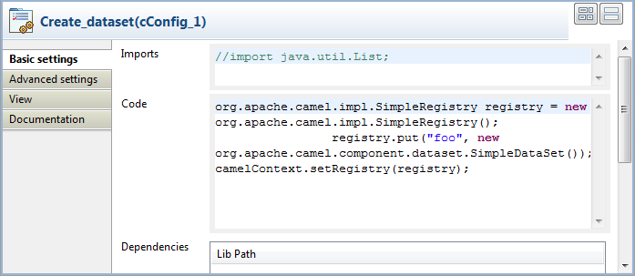
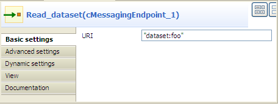
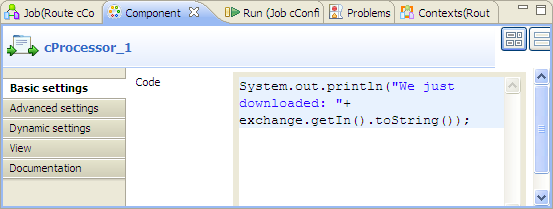
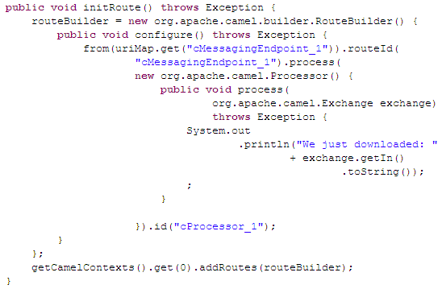
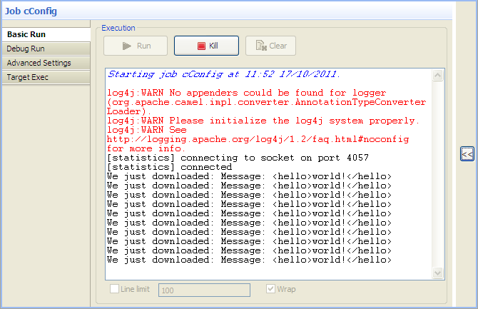

|
Famille de composant |
Context | |
|
Fonction |
Le composant cConfig permet de configurer le contexte Camel (CamelContext). | |
|
Objectif |
Le cConfig manipule le contexte Camel comme requis par les Routes. | |
|
Basic settings |
Imports |
Saisissez le code Java qui vous aident à importer, si nécessaire, les bibliothèques utilisées dans le champ Code. |
| Code |
Saisissez du code pour manipuler le contexte Camel. | |
| Dependencies | Sélectionnez la ou les bibliothèque(s) requises par le CamelContext ou le Type Converter Registry dans la liste. | |
|
Utilisation |
Le cConfig ne peut être directement ajouté dans une Route. | |
|
Limitation |
n/a | |
Dans ce scénario, un jeu de données est ajouté dans le Registry et implémenté par un composant cMessagingEndpoint.
Dans la Palette, développez le dossier Context et sélectionnez le composant cConfig, puis déposez-le dans l'espace de modélisation graphique.
Développez le dossier Messaging, sélectionnez le composant cMessagingEndpoint et déposez-le dans l'espace de modélisation graphique.
Développez le dossier Processor, sélectionnez le cProcessor et déposez-le dans l'espace de modélisation graphique.
Cliquez-droit sur le composant d'entrée cMessagingEndpoint, sélectionnez Row > Route dans le menu contextuel et cliquez sur le composant cProcessor.
Nommez les composants comme vous le souhaitez, afin de mieux identifier leur fonctionnalité.
Double-cliquez sur le cConfig nommé Create_dataset pour afficher sa vue Basic settings dans l'onglet Component et configurer ses paramètres.
Dans le champ Code, saisissez du code pour enregistrer l'instance du jeu de données foo dans le Registry, comme ci-dessous.
org.apache.camel.impl.SimpleRegistry registry = new org.apache.camel.impl.SimpleRegistry(); registry.put("foo", new org.apache.camel.component.dataset.SimpleDataSet()); camelContext.setRegistry(registry);Double-cliquez sur le composant d'entrée cMessagingEndpoint nommé Read_dataset pour afficher sa vue Basic settings dans l'onglet Component.
Dans le champ URI, saisissez dataset:foo entre guillemets.
Double-cliquez sur le composant cProcessor nommé Monitor pour afficher sa vue Basic settings dans l'onglet Component.
Dans le champ Code, personnalisez le code comme suit, afin que la console de la vue Run affiche le contenu du message :
System.out.println("Message content: "+ exchange.getIn().toString());Appuyez sur les touches Ctrl+S pour sauvegarder votre route.
Cliquez sur l'onglet Code au bas de l'espace de modélisation graphique pour visualiser le code généré.
Comme affiché dans le code, une route est créée à partir de (
from) l'endpoint identifié parRead_datasetetcProcessor_1récupère le contenu du message et l'affiche dans la console.Cliquez sur la vue Run pour l'afficher et cliquez sur le bouton Run pour lancer l'exécution de votre route. Vous pouvez également appuyer sur la touche F6 pour l'exécuter.
Résultat : Le contenu du message est affiché dans la console.
